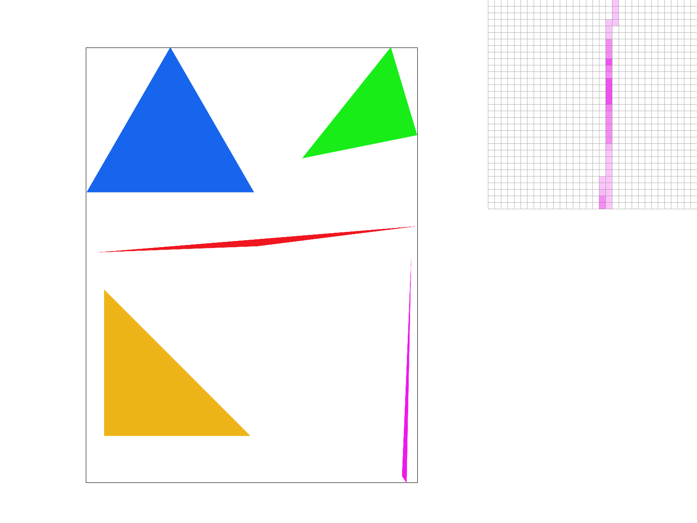

Overview
In this project, we went over various concepts in sampling and rasterization. There were a lot of components that had to be worked on such as the frame buffer, sample buffer, and texture maps. I found it cool seeing the tradeoffs between different implementations and the visual output that came as a result of changes in the code.
Section I: Rasterization
Part 1: Rasterizing single-color triangles
My process for rasterizing triangles
- Limiting the possible pixels to consider from the whole of the frame buffer to just those within the square (min_X, min_Y) and (max_X, max_Y).
- Iterating pixel by pixel in this square and considering whether or not the point is in the triangle. We do this by:
- First, we add 0.5 to both the x and y coordinates because we want to consider whether the center of the pixel is inside the triangle.
- Then, we use the line formula: L(x, y) = -(x-x0)(y1-y0) + (y-y0)(x1-x0)
- The triangle is composed of three lines. The point is inside the triangle if all three line equations are greater than 0 or all three line equations are less than 0. We do this because we have to account for the winding order of the vertices (clockwise versus counter-clockwise)
Confining the points that we check to just the ones in the box that bounds the box helps improve performance. This also ensures that it is no worse than chekcing each sampel within the bounding box of the triangle.

|

|

|

|
Part 2: Antialiasing triangles
Supersampling algorithm- We scale the sample buffer by the sample_rate to fit the new supersamples in our buffer.
- For each triangle pixel I took the same steps as in Part 1 but with the following alterations:
- Previously, we just got the center by doing incrementing the x and y coordinates by 0.5. I changed this to be 0.5/ sqrt(sample_rate). So we get the pixel in more detail.
- For each pixel I traversed each of axis by the 0.5/ sqrt(sample_rate) rate to cover all of the supersample squares in the pixel.
- I then stored the color value directly in the sample_buffer instead of calling fill_pixel.
- The final addition was made in the rasterize to frame buffer function. Previously, the sample buffer and frame buffer were the same size. I had to change how which sample buffer indices the frame buffer pulled from.
- I then averaged the supersample colors for each pixel to get the value to return to the framebuffer.
Supersampling is useful for the pixels on the edge of the triangle. If we just decide to either fill in the pixel fully or not at all then we end up with a jagged boundary. Super sampling works to smoothen the transition between in-triangle and out-triangle pixels.
|
|
|

|
Part 3: Transforms
I updated the robot to do a salute.Section II: Sampling
Part 4: Barycentric coordinates
Barycentric coordinates are a trio of coordinates that each correspond to one vertex of the triangle. The closer our point is to a vertex, the larger that vertex's Barycentric coordinate should be, the more that point's color will correspond to the vertex's color.
Part 5: "Pixel sampling" for texture mapping
When we are pixel sampling from our texture, for each location of the sample buffer we look at the corresponding area on the texture. In nearest sampling, we get the nearest pixel on the texture to our current sample buffer point. In bilinear sampling, we get the nearest 4 pixels on the texture and compute the lerps (linear interpolation) to find how much we should weight each of the 4 pixels by in our sample buffer color calculation.
|
|
|
|
|
|
I chose this example focusing on the arches of the Campanille observation area. For me, the nearest is very jagged and the colors contrast so much its hard to tell where the vertical part of the arch meets the inside of the campanille. Meanwhile, the bilinear sampling method produces a defined, round arch and it is easier to distinguish the exterior from the interior.
Part 6: "Level sampling" with mipmaps for texture mapping
It doesn't make sense to use the finest detailed texture map if our sample frame moves around too fast to capture the intricacy of the texture. By that logic, we use level sampling by the max of the square root of the deriviatives to best capture the tradeoff between artifacts (more detailed texture map) and antialiasing (less detailed texture map).
In terms of performance, defaulting to L_Zero is fastest since we don't have to do level calculations, followed by l_nearest, and l_linear. l_nearest is faster in that we don't have to do sample from two different mipmap levels and then weight the two level samples. Speed and antialiasing are the main tradeoffs. Antialiasing comes at the cost of speed. Memory isn't as much of an issue as we don't copy over the entire mipmap array just the address to the mipmap array.
|
|
|
|
|
|
Section III: Art Competition
If you are not participating in the optional art competition, don't worry about this section!